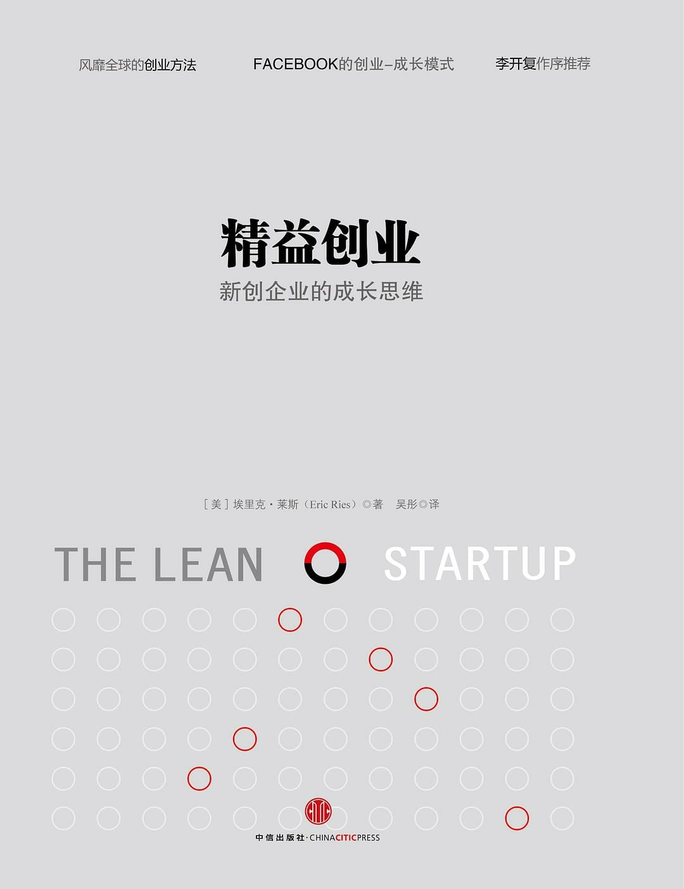

注：【】部分为笔者心得，非原文摘抄。
- 【成功无定律。】
- 精益创业的方法：
- 创业者无处不在；
- 创业即管理；
- 经证实的认知；
- 开发-测试-认知；
- 创新核算。
- 新创企业的那种颠覆性、创造性和混乱的状况必须加以管理。
- 【如果你希望自己的企业将来成为一家优秀的企业，从一开始就要用优秀企业的运作和管理水准严格要求自己。】
- 精益生产的原则包括吸取每位员工的知识和创造力、把每批次的规模缩小、实时生产和库存管理，以及加快循环周期。
- 【要不断地试错、不断地反馈、不断地调整，而不是一开始制定一个长远目标，然后闭门造车。】
- 企业内部的创新者也是真正的创业者。
- 新创企业是一个由人组成的机构，在极端不确定的情况下，开发新产品或新服务。
- 【人是不可靠的，在无法用机器替代的情况下，必须加强管理。但要注意，管理方式和手段不能扼杀创新能力。】
- 领导者需要创造条件，允许员工们进行创新活动中需要做的实验。
- 成功地执行一项无意义的计划是导致失败的致命原因，而经证实的认知则是解决这个问题的首要方法。
- 麦特卡夫定律（Metcalfe’s law）：一个通信网络的整体价值，约和这个系统用户数量的平方成正比。
- 延期会让许多新创企业得不到所需要的反馈意见。
- 学会预见浪费所在，并有系统地排除它们。
- 向顾客提供利益，除此之外都是浪费。
- 提供顾客使用新品的机会，然后评估他们的行为。
- 学习是新创企业进步的重要部分。
- 要让企业愿景和顾客接受度相匹配。
- 真正的新创企业生产力是有系统、有步骤地找到要开发的正确的东西。
- 凡事总有例外。
- 新创企业的实验由其愿景为指引，每个实验的目标都是为了建立一项围绕愿景的可持续业务。
- 【不要问用户想要什么，要问用户想不想要这个。】
- 创业者最重要的两个假设是价值假设和增长假设。
- 价值假设衡量的是当顾客使用某种产品或服务时，它是不是真的实现了其价值。
- 增长假设用来测试新顾客如何发现一种产品或服务的。
- 【座谈会的效果不如衡量用户的真实行为。】
- 团队成员要先提出 4 个问题：
- 顾客认同你正在解决的问题就是他们面对的问题吗？
- 如果有解决问题的方法，顾客会为之买单吗？
- 他们会向我们购买吗？
- 我们能够开发出解决问题的方法吗？
- 成功不是实现一项产品功能；成功是学会如何解决顾客的问题。——马克·库克
- 即使是全球顶尖企业中资历老到的经理人和执行官，也要致力于不断推陈出新，开发创新的新产品。
- 计划这种管理工具只在具备长期稳定运营记录的情况下才管用。
- 改变既有思维方式固然困难，但它对新创企业的成功至关重要。
- 认识到在何时何地投入精力，可以节省时间和金钱。
- 阶段性认知目标对创业者很有用，它可以准确、客观地评估创业者的进展情况。
- 了解新产品或服务的第一步，是从根本上确定它是“价值创建”，还是“价值破坏”。
- 从价值的角度来考虑，创业者非常需要了解新创企业增长背后的原因，避免很多价值破坏类的增长。
- 创业者必须走出办公大楼，开始学习。——史蒂夫·布兰克
- 把战略决策建立在对顾客第一手的理解上。
- 无论再多的设计也无法预测将产品投入真实世界有多复杂。
- 最小化可行产品有助于创业者尽早开启学习认知的历程，它是用最快的方式，以最少精力完成“开发-测量-认知”的反馈循环。
- 与原型或概念测试不同的是，最小化可行产品并非用于回答产品设计或技术方面的问题，而是以验证基本的商业假设为目标。
- 当遇到疑问，就化繁为简。
- 【有效的赢利模式和能力一定是可持续增长的。】
- 顾客是生产流程中最重要的部分。——爱德华·戴明
- 如果我们不知道谁是顾客，我们也就不知道什么是质量。
- 顾客才不在意某项功能花了多少时间开发，他们只在意这种功能是不是满足他们的需求。
- 开发最小化可行产品应当符合一条简单规则：放弃对你需要的认知没有直接用处的一切功能、流程和努力。
- 一家新创企业的工作是：
- 严格测试企业目前的状况，正视评估中揭示的现实真相；
- 设计实验，从而了解如何让真实数据向商业计划中的理想目标靠得再近些。
- 锲而不舍的传说是非常危险的。
- 核算是成功的关键。
- 创新核算分三步走：
- 第一，使用最小化可行产品确定企业目前所处阶段的真实数据；
- 第二，新创企业必须尝试把增长引擎从基准线逐步调至理想状态。
- 好的设计是能改善顾客行为的设计。
- 无法推动商业模式中的驱动因素，就不会取得进步。它成为一个明确的提示，说明已经到了转型时刻。
- 与其把精力用在卖弄招数上，还不如设法建立可持续的业务。
- 只要清楚理解了因果关系，人们就能从自己的行动中更好地学习。
- 放大转型：之前被视为产品中单独的一个功能特性，成为产品的全部。
- 缩小转型：把原来的整个产品转化为一个更大型产品中的一项单独的功能特性。
- 客户细分市场转型：产品的前提假设得到部分证实，解决了相关问题，但针对的是与原本预期不同的顾客。
- 客户需求转型：目标客户有了需要解决的问题，只不过不是我们事先预计的。
- 平台转型：从应用产品转为平台成品，或反方向的转化。
- 商业架构转型：高利润低产量和低利润高产量之间的转化。
- 价值获取转型：公司获取价值方式的转变，会对业务的其它部分、产品和市场营销战略造成深远的影响。
- 增长引擎转型：带动新创企业成长的增长引擎主要有三种：病毒式、黏着式和付费式。
- 渠道转型：可以通过不同的渠道实现相同的基本解决方案，而且效率更高。
- 技术转型：是一种用来吸引并保留现有顾客群的可持续创新，一种递增式的改进。
- 转型在任何成长型企业发展过程中都是一个永恒的主题。
- 转型并非仅仅是一种改变，它是一种有组织有条理的特殊改变，用以测试一个关于产品、商业模式和增长引擎的新的基础假设。
- 【小批量生产和实践的方式具备更迅速发现问题和更灵活修正的优势。】
- 长期的成功是创业者应该追求的方向。
- 可持续增长的特征为新顾客是由以往顾客的行动带来的。
- 以往顾客推动可持续增长的方式主要有四种：
- 口碑相传；
- 产品使用带来的衍生效应；
- 有资金来源的广告；
- 重复购买或使用。
- 黏着式增长引擎的规则是，如果取得新顾客的比率超过流失率，产品就会增长。
- 具有病毒式增长特质的产品依靠人和人之间的传递，是正常使用产品的必然结果。
- 付费式增长引擎的工作方式是，要么提高来自每位顾客的收入，要么降低获取新顾客的成本。
- 对第一次错误要容忍，但不允许同样的错误发生两次。
- 不管是新创企业还是企业内部的新创团队，都要具备三种架构特征：
- 稀少但稳定的资源；
- 开发业务的独立权；
- 与绩效挂钩的个人利益。
- 为创新建立一个沙盒系统，能控制创新的冲击力，但不会限制创新团队使用的方式。
- 过去，人是第一位的；未来，体系是第一位的。——弗雷德里克·温斯洛·泰罗
- 没什么比高效地做一件根本不该做的事更加徒劳的了。——彼得·德鲁克
- 调整创新是如何发生的想法，就能系统地实现更好的创新成果。
- 创业必须避免教条主义和僵化的思想体系。